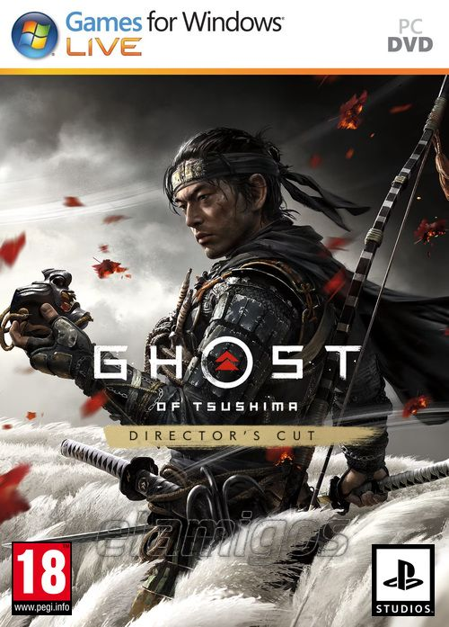

Ghost of Tsushima DIRECTORS CUT 59.0 GB
Género: Acción, Mundo abierto, Parkour
Ambientada en 1274 en la isla epónima de Tsushima, el juego gira en torno al
samurái Jin Sakai uno de los pocos supervivientes de la primera invasión
mongola a Japón. Jin tendrá que dominar un nuevo estilo de lucha, el camino
del Fantasma, para derrotar a las fuerzas mongolas y luchar por la libertad de
su pueblo y de la isla.